As fotos do site são de bancos de imagem livres (Pixabay, Pexels e Wikimedia Commons) e servem só para você reconhecer cada item. Obrigado aos fotógrafos. O produto vendido no link pode ter outra aparência.
Pixabay e Pexels: licenças próprias dos sites, que permitem o uso. Wikimedia Commons: licenças indicadas na tabela (CC BY-SA exige crédito ao autor e a mesma licença para a imagem; as fotos foram cortadas em quadrado e reduzidas).
| Item | Autor | Fonte | |
|---|---|---|---|
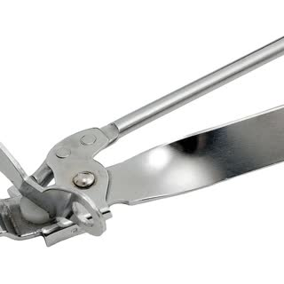 | Abridor de latas | WikimediaImages | Pixabay |
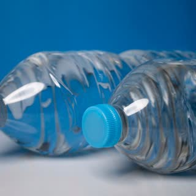 | Água | nerea arance | Pexels |
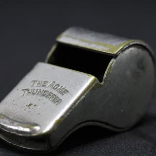 | Apito | bluebudgie | Pixabay |
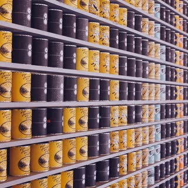 | Comida | PublicDomainArchive | Pixabay |
| Documentos | Marta Branco | Pexels | |
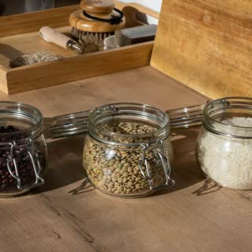 | Absorvente de oxigênio / potes | Ron Lach | Pexels |
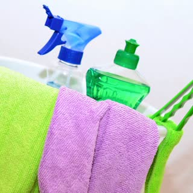 | Balde | congerdesign | Pixabay |
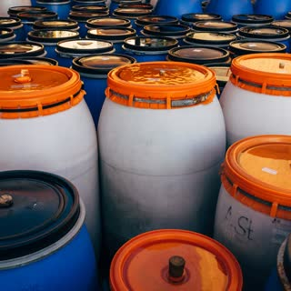 | Bombona | Markus Winkler | Pexels |
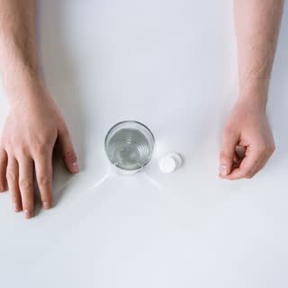 | Pastilhas | cottonbro studio | Pexels |
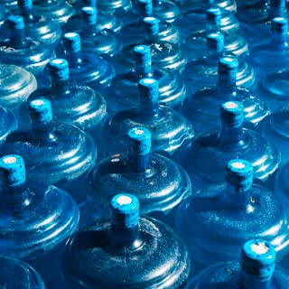 | Galão de 20 L | Thilina Alagiyawanna | Pexels |
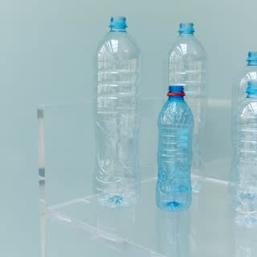 | Garrafas PET | Polina Tankilevitch | Pexels |
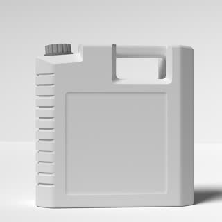 | Galão dobrável | Personal_Graphic | Pixabay |
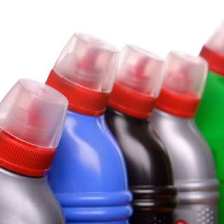 | Água sanitária | ds_30 | Pixabay |
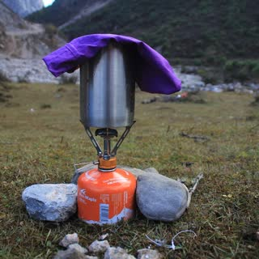 | Refil de gás | lauchomo | Pixabay |
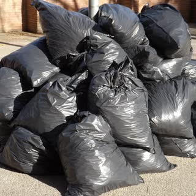 | Sacos de lixo | ALTEREGOINTELIGENCIA | Pixabay |
| Papel higiênico | Anna Shvets | Pexels | |
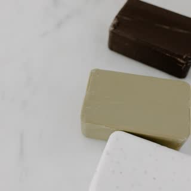 | Sabão e sabonete | Tara Winstead | Pexels |
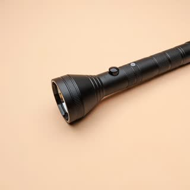 | Lanterna | life of village | Pexels |
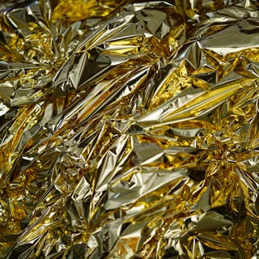 | Manta térmica | Hans | Pixabay |
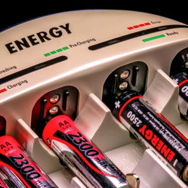 | Pilhas recarregáveis | analogicus | Pixabay |
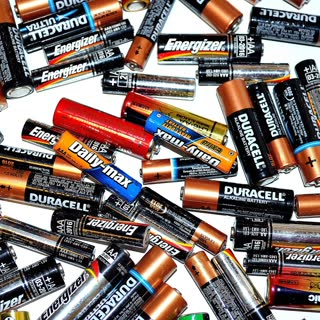 | Pilhas alcalinas | PublicDomainPictures | Pixabay |
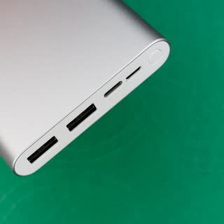 | Power bank | viarami | Pixabay |
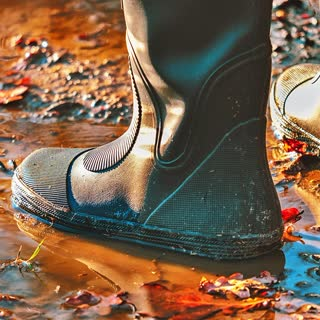 | Bota de borracha | NickyPe | Pixabay |
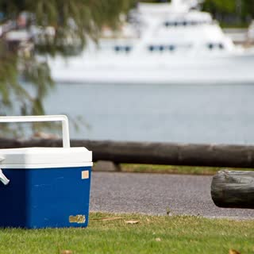 | Caixa térmica | marinacath | Pixabay |
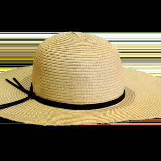 | Chapéu | garten-gg | Pixabay |
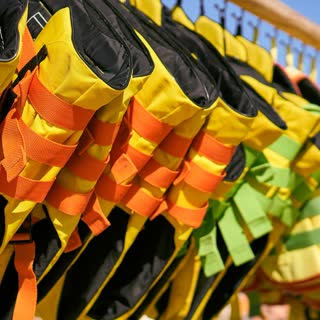 | Colete salva-vidas | distelAPPArath | Pixabay |
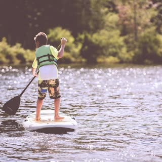 | Colete infantil | Pexels (conta no Pixabay) | Pixabay |
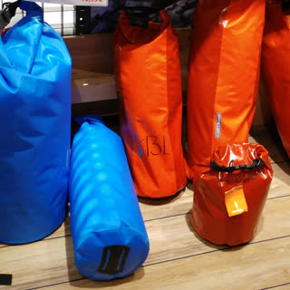 | Saco estanque | Martin071982 · CC BY-SA 4.0 | Wikimedia Commons |
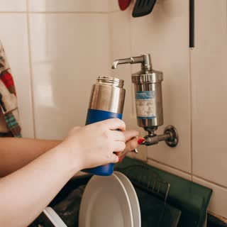 | Filtro de água | Helena Lopes | Pexels |
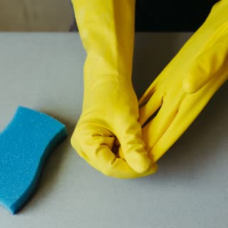 | Luvas | Jonathan Borba | Pexels |
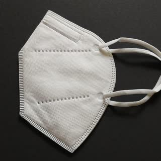 | Máscara PFF2 | ContentNetwork | Pixabay |
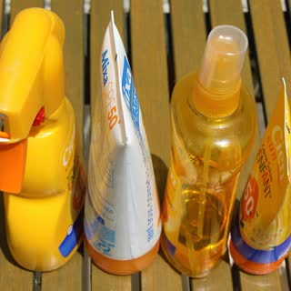 | Protetor solar | chezbeate | Pixabay |
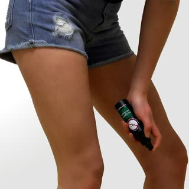 | Repelente | mosquito1 | Pixabay |
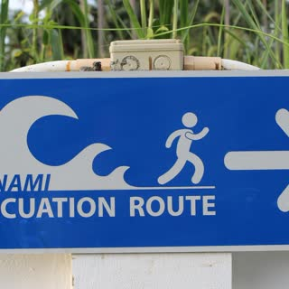 | Rota de fuga | scym | Pixabay |
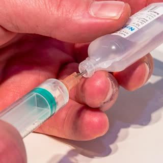 | Soro fisiológico | Myriams-Fotos | Pixabay |
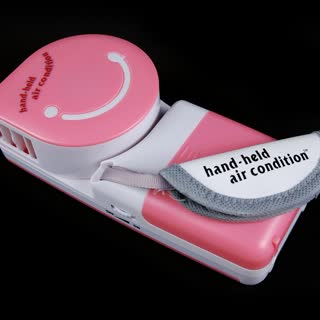 | Ventilador portátil | cygig | Pixabay |
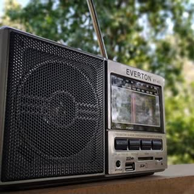 | Rádio | Yılmaz Burak Sakarya | Pexels |
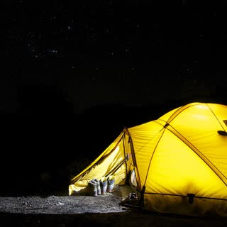 | Barraca | bhossfeld | Pixabay |
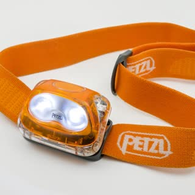 | Lanterna de cabeça | tomekwalecki | Pixabay |
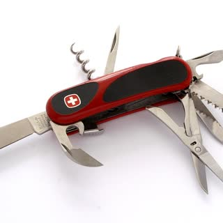 | Canivete multifunção | D-M Commons · CC BY-SA 3.0 | Wikimedia Commons |
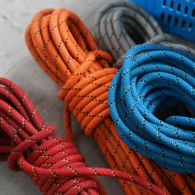 | Corda | Warren Yip | Pexels |
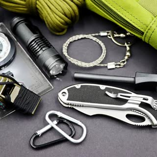 | Ferro de fogo | Marta Branco | Pexels |
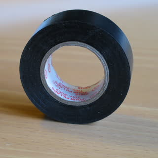 | Fita isolante | Jonas Bergsten · domínio público | Wikimedia Commons |
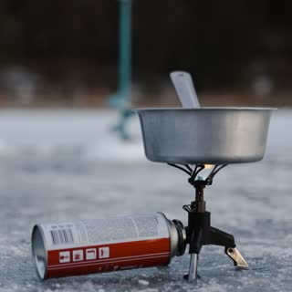 | Fogareiro | Tima Miroshnichenko | Pexels |
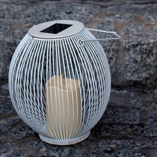 | Lampião | _Alicja_ | Pixabay |
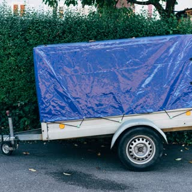 | Lona | Markus Winkler | Pexels |
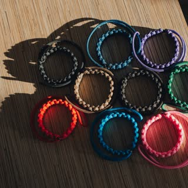 | Pulseira paracord | Max Avans | Pexels |
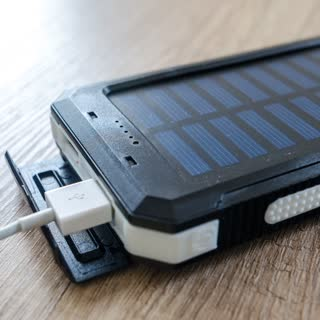 | Power bank solar | Lukas Blazek | Pexels |
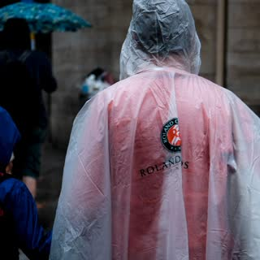 | Poncho | Mathias Reding | Pexels |
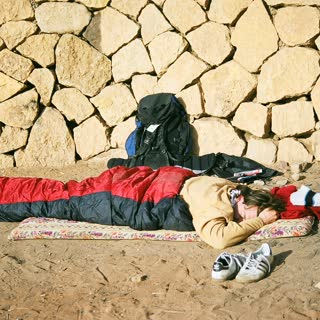 | Saco de dormir | Autor não informado no arquivo · CC BY-SA 3.0 | Wikimedia Commons |
| Primeiros socorros | Alexas_Fotos | Pixabay | |
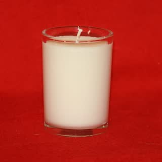 | Velas | mikehipp · CC BY-SA 2.0 | Wikimedia Commons |
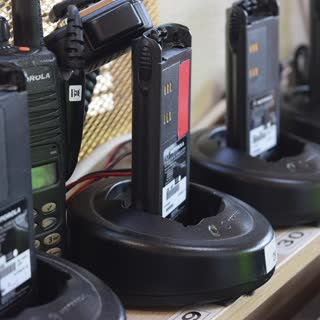 | Walkie-talkie | paologhedini | Pixabay |
| Água (apartamento) | Patrick | Pexels | |
| Disjuntor geral | jarmoluk | Pixabay | |
| Itens da criança | Coop41 · domínio público | Wikimedia Commons | |
| Mochila | de:Benutzer:sjr · CC BY-SA 3.0 | Wikimedia Commons | |
| Ração e água do pet | sweetlouise | Pixabay | |
| Remédios | stevepb | Pixabay |